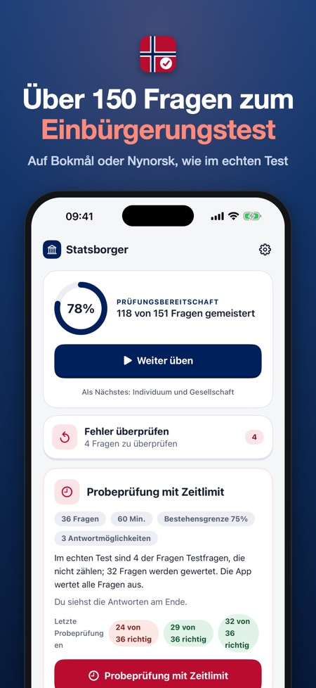
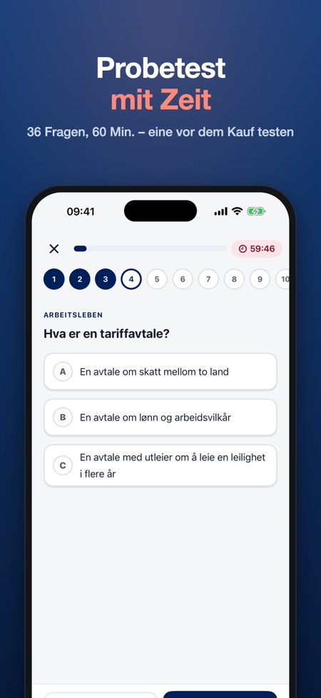
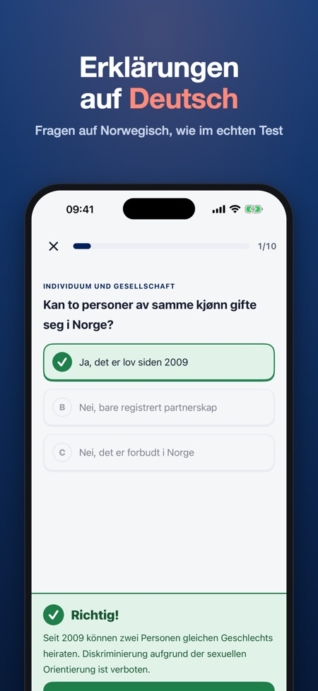

Statsborgerprøven üben. 150+ Übungsfragen auf Norwegisch mit Erklärungen auf Deutsch. Probeprüfung mit Zeit: 36 Fragen in 60 Minuten.



Einmal zahlen, kein Abo. Bereite dich auf den norwegischen Einbürgerungstest (statsborgerprøven) vor – mit 150+ Fragen und Erklärungen.
FRAGEN AUF NORWEGISCH, ERKLÄRUNGEN AUF DEUTSCH
Wie im echten Test ist jede Frage auf Norwegisch (Bokmål oder Nynorsk). Nach jeder Antwort liest du auf Deutsch, warum sie richtig oder falsch ist – so lernst du Sprache und Fakten zugleich.
DAS IST DRIN
• 150+ Fragen in einfachem Norwegisch zu den 8 Themen der Gesellschaftskunde: Geschichte und Geografie, Demokratie und Wohlfahrt, Individuum und Gesellschaft, nach Norwegen kommen, Arbeitsleben, Bildung, Familie und Kindheit sowie Gesundheit
• Probeprüfung mit Zeit im offiziellen Format: 36 Fragen in 60 Minuten, bestanden ab 75 %
• Fehler kommen wieder, bis du sie zweimal hintereinander richtig beantwortest
• Fortschritt pro Thema
FAIRER PREIS
Teste das Thema Geschichte und Geografie und eine komplette Probeprüfung ohne Kauf. Schalte alles mit einem Kauf frei. Kein Abo, keine Werbung, kein Konto. Mit der Familienfreigabe gilt der Kauf für die ganze Familie. Funktioniert offline.
Diese App ist unabhängig und steht in keiner Verbindung zu HK-dir, UDI oder der norwegischen Regierung. Alle Fragen sind unsere eigenen, basierend auf den öffentlichen Lehrplanthemen. Die Probeprüfung dient der Übung; der echte Test kann abweichen.